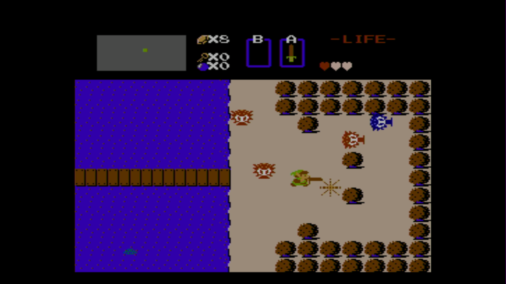

三个子项目 · 接班前先走一轮
孩子来，你就知道怎么带。
每个文件夹都有可操作的演练页面、完整解说词和物料清单。先点开自己负责的项目，体验一次，再照着手卡讲。

现场只记住三件事
- 一个任务就够。 填几格、纠正一次、看一页。用鼓励收尾，不让孩子为了盖章反复过关。
- 一张子项目桌，一位看护，两处参与位置。 认怪兽需要讲解时，另一位置只开放自助看图；人多先完成当前一轮，不再开新队伍。
- 给下一位留空间。 填色卡可以带走，展册可以下次再看。安全通道至少留 1.2m。
怎么发给志愿者
发整份压缩包，或只发对应项目文件夹。下载解压后，用电脑浏览器打开 index.html；不需要安装软件或登录账号。
每页右上角能下载解说词，也能打印文字手卡。
使用前确认
第 2 项是“教机器人认怪兽”候选演练。组织者确认并带孩子试一轮后，再用于正式活动。
这套手册供志愿者理解流程，不改变此前的申报 PDF、场地或物料承诺。